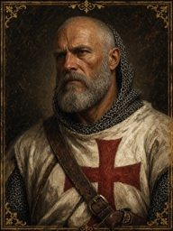
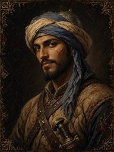
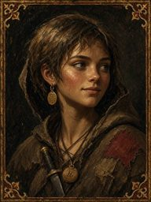

PITCH · OPTION B
✓ HeroBrother Tancred
▸
Recruit 1/2any order
▸
🔒 Finaleafter 2 wins
▸
New hero?chronicle
Notices

A Templar in Need
Renaud joined: "They took the coast road with the carts."
THE BREACH · WON

Smoke at the Well
Raiders cutting down one of their own.
THE RIDGE · Yusuf ibn Qasim, Scout

Thief in the Baggage Train
Renaud: "the carts". Something small is still moving.
THE BAGGAGE TRAIN · Wren, Scout
🔒
The Chapel Ford
Win 1 more notice. Whatever you haven't done stays undone.
FINALE · NEW MAP · defeat the Red Captain
Side jobs
Skirmish: The Ridge
Skirmish: The Breach
CAMPAIGN FLOW (OPTION B)
Create hero▸Mission board
▾ any order ▾
Templar in NeedSmoke at the WellBaggage Train
win ▸ Accept / Decline ▸ board · lose ▸ Retry / Board
▾ after 2 wins (the 3rd closes) ▾
Finale: The Chapel Ford▸Ending + Chronicle
▾
Roll a new hero?↺ back to Create hero
SQUAD Tfull HP every battle